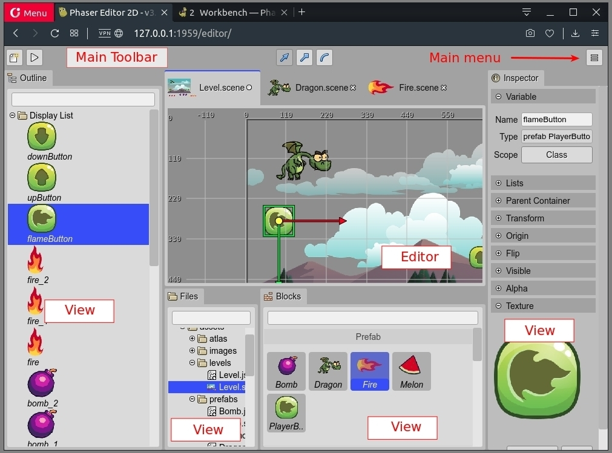

Workbench
The workbench is the sum of all the parts of the IDE: the editors, views, dialogs, menus, commands, themes, extensions, storage. Is the basement for the tools included in the IDE.
If you are a Phaser Editor 2D v2 user, this new version of the IDE should result in very familiar to you. It has a similar layout but removes all the complexity of a general-purpose IDE, and shows to you only the tools you need.
The IDE includes elements present in other game development tools:
The Outline view shows the content of the active editor but with a hierarchical structure.
The Inspector view shows the properties of the objects selected in the active editor or active view. We can say all objects you can edit in the IDE are modified in the Inspector view.
The Blocks view shows the elements you can use to build the objects of the active editor. If the active editor is the Scene Editor, the Blocks view shows the assets you can drop into the scene. If the active editor is the Asset Pack Editor, then it shows the files you can import into the Asset Pack file. Maybe this view is not so common in the market, but the concept is simple.
The Files view displays the files of the project. It is just like any other file explorer. It allows to delete, rename, move, upload the files. Open the files in an editor and other file related actions. Like the other views, when you select a file, the Inspector view shows the properties and other actions related to the file.
The Main toolbar and Main menu provides commands (or actions) that affect the current editor or the whole IDE.